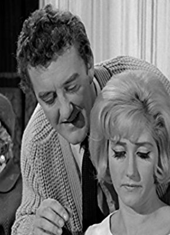
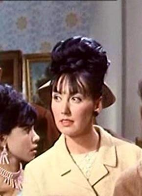
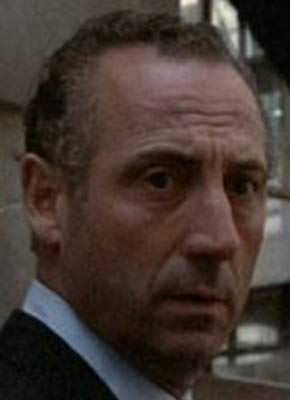

#11779 Carry On 06 - Ist ja irre - Der Schiffskoch ist seekrank
Alternativ: Carry On Cruising (Englischer Titel)


 IMDB-Wertung: 6.1 / 10
IMDB-Wertung: 6.1 / 10  Metascore: 0
Metascore: 0 
Endlich hat Crowther die Chance, Kapitän auf einem neuen Linienschiff zu werden. Er muss nur noch eine Kreuzfahrt ohne Probleme über die Bühne bringen. Zu seinem Entsetzen wird ihm eine neue, jedoch völlig untaugliche Crew zugeteilt: Der liebeskranke Arzt Dr. Binn, der seekranke Koch Haines, der übereifrige Offizier Marjoribanks und ein paar weitere Neulinge verursachen bei ihren durchaus gut gemeinten Bemühungen ein Chaos nach dem anderen.
Jahr: 1962
Dauer: 84 Minuten
FSK:
Land: England Studio: Carol Media HomeTonspuren:
Untertitel:
Auflösung: SD (576x320) Größe: 700 MB
Genre: Komödie, Liebe
Regisseur: Gerald Thomas, Ralph Thomas
Drehbuch: Eric Barker, Norman Hudis
Soundtrack: Douglas Gamley, Bruce Montgomery, Eric Rogers
Darsteller:
 Sidney James als Captain Wellington Crowther
Sidney James als Captain Wellington Crowther Kenneth Williams als First Officer Leonard Marjoribanks
Kenneth Williams als First Officer Leonard Marjoribanks Kenneth Connor als Doctor Arthur Binn
Kenneth Connor als Doctor Arthur Binn-  Liz Fraser als Glad Trimble
- Dilys Laye als Florence 'Flo' Castle
- Esma Cannon als Bridget Madderley
- Ronnie Stevens als Drunk Passenger
- Willoughby Goddard als Large Man
 Ed Devereaux als Young Officer
Ed Devereaux als Young Officer Anton Rodgers als Young Man
Anton Rodgers als Young Man-  Pauline Chamberlain als Passenger (uncredited)
-  Gerald Paris als Steward (uncredited)
- Jon Rumney als Passenger (uncredited)
 Reg Thomason als Passenger (uncredited)
Reg Thomason als Passenger (uncredited) Ian Wilson als Passenger (uncredited)
Ian Wilson als Passenger (uncredited)- Lance Percival als Wilfred Haines, Ship's Cook
- Jimmy Thompson als Sam Turner, Barman
- Vincent Ball als Jenkins
- Cyril Chamberlain als Tom Tree, Steward
- Brian Rawlinson als Nervous Steward
- Anthony Sagar als Cook
- Terence Holland als Passenger
- Mario Fabrizi als Second Cook
- Marian Collins als Bride
- Jill Mai Meredith als Shapely Miss
- Alan Casley als Sailor
- Evan David als Bridegroom
- Del Baker als Officer (uncredited)
- Roy Beck als Passenger (uncredited)
- Joe Beckett als Passenger (uncredited)
- Hyma Beckley als Passenger (uncredited)
- Roberto Cardinali als Dr. Arthur Binn (singing voice) (uncredited)
- Norman Coburn als Wireless Operator (uncredited)
- Peter Evans als Passenger (uncredited)
- Patrick Halpin als Passenger (uncredited)
- Aidan Harrington als Passenger (uncredited)
- Alan Harris als Passenger (uncredited)
- Jack Hetherington als Passenger (uncredited)
- Roy Lansford als Passenger (uncredited)
- Aileen Lewis als Mrs. Lewis (uncredited)
- Jack Mandeville als Passenger (uncredited)
- Cecil Paul als Steward (uncredited)
- Pat Ryan als Passenger (uncredited)
- Arnold Schulkes als Young Officer (uncredited)
- Bunny Seaman als Passenger (uncredited)
- John Smart als Passenger (uncredited)
- Emile Stemmler als Waiter (uncredited)
- John Timberlake als Chef (uncredited)
- Jan Williams als Passenger (uncredited)
Datei: X:\7+mehr(A-Z)\Carry On\Carry On 06 - Ist ja irre - Der Schiffskoch ist seekrank (1962, FSK, 576x320).avi seit 20.09.2019
Festplatte: HD Collection-7+mehr(A-Z)+Person
 Es gibt insgesamt 33 Filme in der Gruppe '7+mehr(A-Z)\Carry On'
Es gibt insgesamt 33 Filme in der Gruppe '7+mehr(A-Z)\Carry On'